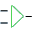
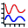
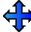
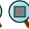
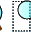
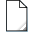

⚡
Proteus 8 Pro
Proteus 8 Professional — [Sample.pdsprj]
VSM CORE
📂 684 Samples
Preset 1: LM016L 16x2 LCD Display
Preset 2: Knight Rider 8-LED Chaser
Preset 3: Push-Button 7-Seg Counter
Preset 4: Interactive UART Serial Echo
Preset 5: Dual Waveform (Oscilloscope)





100%
</> Source
Scope
>_ Terminal
Schematic Capture
PCB Layout (ARES)

3D Visualizer
Digital Oscilloscope — Tektronix 2-Channel
CH-A Volts/Div
0.5 V
1.0 V
2.0 V
5.0 V
CH-B Volts/Div
0.5 V
1.0 V
2.0 V
5.0 V
Trigger / Freeze
Freeze (Hold)
Virtual Terminal — RS232 (9600-8-N-1)
--- PROTEUS VSM VIRTUAL TERMINAL (9600-8-N-1) ---
Send
Source Code Debugger — [ATMEGA328P.asm]
⚡ Assemble & Flash
Ready
CPU REGISTERS & HARDWARE FLAGS
ACC (A)
0x00
IDX (X)
0x00
PC
0x0000
SP
0xFF
FLAGS:
Z:0
C:0
N:0
CYCLES:
0
Pick Devices (5,788 Windows Proteus Components)
✕
SCHEMATIC MODEL
🔲
PCB PACKAGE FOOTPRINT
DIP-16
Windows Proteus 8 Professional Samples (684 Real Projects)
✕
Bill of Materials (BOM) Report
✕
Item
Designator
Device
Quantity
Package
Design Rule Check (DRC) Verification
✕
Running Proteus Electrical Rule Check (ERC) & Design Rule Check (DRC)... Checking for unrouted nets... Checking for floating input pins... Checking for power supply conflicts...
SPICE Netlist Viewer
✕
* Proteus SPICE Netlist Generator .TITLE Proteus 8 Design